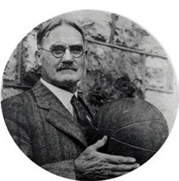
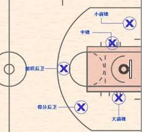
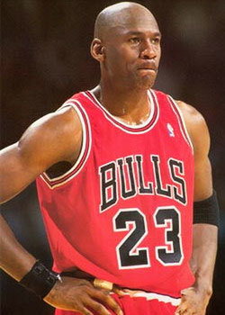

年代:1891年
發明者:詹姆士‧奈史密斯博士

源地:美國麻州
名字由來:最初在體育館兩端牆上10呎處懸掛兩個桃木籃子（Basket因為當地盛產桃子）進行比賽。這項因此被定名Basketball
click here
規則
- 起初: 1892年詹姆士‧奈史密斯為籃球運動制定13條規則，比賽時間分為上半場、下半場各15分鐘，對場地大小也有規定，上場人數由每隊10人、9人、6人減至1893年正式決定每隊每場上場人數為5人
- 現今:比賽方法 - 五人一隊，其中一人為隊長，候補球員最多七人。比賽分前、後半場，每半場各20分鐘，中場休息10分鐘。比賽結束兩隊積分相同時，則舉行延長賽5分鐘，若5分鐘後比數仍相同，則再次進行5分鐘延長賽，直至比出勝負為止。
- 得分種類 - 球投進籃框經裁判認可後，便算得分。3分線內側投入可得2分；3分線外側投入可得3分，罰球投進得1分。
- 進行方式 - 比賽開始由兩隊各推出一名跳球員至中央跳球區，由主審裁判拋球雙方跳球，開始比賽。
- 選手替換 - 選手替換次數則不限定。交換選手的時間選在有人犯規、爭球、叫暫停等。裁判可暫時中止球賽的計時。
- 罰球 - 每名球員各有4次被允許犯規的機會，第5次即犯滿退場。且不能在同一場比賽中再度上場。罰球要站在罰球線後，從裁判手中接過球後5秒內要投籃。在投籃後，球觸到籃框前均不能踩越罰球線。
- 違例 - 可分為1普通違例：如帶球走步、兩次運球、腳踢球或以拳擊球。2跳球違例、3跳球時的違例：除了跳球球員以外的人不可在跳球者觸到球之前進入中央跳球區。
- 30秒鐘規則 - 進攻球隊在場上控球時必須在30秒鐘內投籃出手，NBA比賽為24秒，NCAA全美大學體育聯合會比賽中為35秒。
- 10秒鐘規則 - 球隊從後場控制球開始，必須在10秒鐘內使球進入前場即對方的半場。
- 5秒鐘規則 - 持球後球員必須在5秒鐘之內擲界外球出手。NBA規則中為10秒。
- 侵人犯規 - 與對方發生身體接觸而產生的犯規行為。
- 技術犯規 - 隊員或教練員因表現惡劣而被判犯規，比如與裁判發生爭執等情況。
- 取消比賽資格 - 球員做出的不體現運動員精神的犯規動作，比如打人。發生此類情況後，球員應立即被罰出場外。
- 隊員5次犯規 - 無論是侵人犯規，還是技術犯規，一名球員犯規共5次，必須離開球場，不得再進行比賽，NBA規定為6次。
- 違例 - 既不屬於侵人犯規，也不屬於技術犯規的違反規則的行為。主要的違例行為是非法運球，帶球走，使球出界。
- 隊員出界 - 球員帶球或球本身觸及界線或甲線以外區域，即屬球出界。在球觸線或線外區域之前，球在空中不算出界。
- 干擾球 - 投籃的球向籃下落時，雙方隊員都不得觸球。當球在球籃裡的時候，防守隊員不得觸球。
- 被緊密盯防的選手 - 被防守隊員緊密盯防的球員必須在5秒鐘之內傳球，運球或投籃，否則其隊將失去控球權，NBA規則中無此規定。
- 球回後場 - 球隊如已將球從後場移至前場，該球隊球員便不能再將球移過中線或運回後場。
技巧
- 持球 - 使用5根手指持球，並將手指向內緊縮。在球落下的一刻使用手掌接住。
- 軀幹盤球 - 將球放在腰際盤旋，這個動作的關鍵在於臉面朝前，同時眼睛不要看著球，然後做順時鐘、逆時鐘的盤球練習。
- 頸部盤球 - 將球沿著頸部環繞練習，這個練習同樣臉面朝前，頸部切忌不可移動，並且做正、反時針方向的交替練習。
- 單腳盤球 - 兩腳分開並且重心放低，持球在單腳一側做盤球練習。眼睛不要看球，並利用左、右腳做正、反時針方向的交替練習。
- 跨下前後拋球 - 兩腳分開同時重心放低。將球從前方輕拋到後方，兩手迅速由後方接住球，並將球輕拋回前方，如此反覆記時練習。
- 膝部盤球 - 兩腳稍微靠攏同時身體重心放低 ，將球沿著兩膝做盤球練習。眼睛不要看球，並按正、反時針方向交替練習。
- 假動作 - 包括搖擺腰部、舉手開足、球和足部方向相反、假投籃、搖擺頸部、駐足等。
球員位置介紹

- 小前鋒 Small Forward - 所謂的小前鋒，最根本的要求就是要能得分，而且是較遠距離的得分。小前鋒一接到球，第一個想到的就是要如何把球往籃子裡塞。小前鋒的基本工作，就是得分、得分、再得分。
- 大前鋒 Power Forward - 在隊上擔任的任務幾乎都是以苦工為主，要搶籃板、防守、卡位都少不了他，但是要投籃、得分，他卻經常是最後一個。所以說，大前鋒可以算是籃球場上最不起眼的角色了。
- 中鋒 Center - 顧名思義乃是一個球隊的中心人物。他多數的時間是要待在禁區裡賣勞力、賣身材的，他在攻在守，都是球隊上的樞紐，故名之為中。
- 得分後衛 Shooting Guard - 他在場上是以得分為主要任務。他在場上是僅次於小前鋒的第二得分手，但是他不需要練就像小前鋒一般的單打身手，因為他經常是由隊友幫他找出空檔後投籃的。不過也就因為如此，他的外線準頭與穩定性要非常好。
- 控球後衛 Point Guard - 是球場上拿球機會最多的人。他要把球從後場安全地帶到前場，再把球傳給其他隊友，這才有讓其他人得分的機會。如果說小前鋒是一齣戲的主角，那麼控球後衛便是這齣戲的導演。
球賽術語縮寫
- 3P% - 三分球命中率
- 3PM - 三分球成功數
- 3PM-A - 三分球投中，投球次數
- APG - 單場平均助攻次數
- AST - 助攻次數
- AVG - 單場平均得分
- BLK - 藍板球數
- FG - 投籃成功次數
- FG% - 投籃命中率，不包括罰球
- FGM-A - 投中次數
- FT - 罰藍成功數
- FT% - 罰球命中率
- FTM-A - 罰球中數
- F - 前鋒
- C - 中鋒
- G - 後衛
- G-F - 後衛型前鋒
- F-G - 小前鋒
- G - 上場次數
- HI - 本賽季單場最高得分
- MIN - 總出場時間
- MPG - 每場得分
- PF - 犯規次數
- PPG - 平均得分
- PTS - 總得分
- ST - 搶斷
Michael Jordan
★永遠的籃球之神★

- 出生地:美國紐約州紐約布魯克林區
- 出生日期: 1963 年 2 月 17 日
- 身高:198公分
- 位置:得分後衛或小前鋒
- 背號:23
- 生平:1984年畢業於美國北卡羅萊那州的北卡羅來納大學教堂山分校，在NBA選秀中以第一輪第三順位被芝加哥公牛隊選中。
- 在15年的NBA籃球生涯中，先後宣佈退休3次，前13個賽季效力於芝加哥公牛隊，生涯最後兩季則在華盛頓巫師隊度過；目前是夏洛特黃蜂隊的老闆。
- 在15年中，喬丹總共獲得6次總冠軍，5次最有價值球員，6次總決賽最有價值球員，10次入選年度NBA年度第一隊，更史無前例地獲得十屆NBA得分王，其中有七屆（1987~93）是蟬聯。
- 他目前仍保持NBA常規賽球員職業生涯的每場平均得分最高紀錄（30.12分）和季後賽每場平均得分最高紀錄（33.45分）。
- 他在2009年入選籃球名人堂。與他一起建立公牛王朝的教練「禪師」菲爾·傑克森形容喬丹是「當代穿著寬鬆運動短褲的米開朗基羅」。
- NBA官方網站稱：「就受到的讚譽而言，麥可·喬丹是NBA史上最偉大的籃球運動員」。
Go TO First Section
Go to page2
- 鵜鶘123:101大勝騎士
- 最近４場比賽，騎士隊輸掉３場
- LeBron說：「正如我所說的，這個賽季發生了一些奇怪的事情、一些不幸的事情，當然也有一些好事。但歸根到底，我不能再去關注過去。當下才是最重要的事情。我們必須要擊中精力，讓自己在季後賽第一場就保持充沛的精力。我感覺很棒，絕不回頭。」